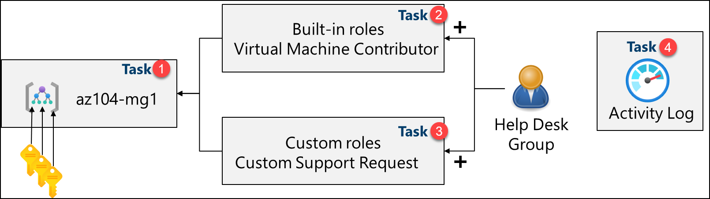
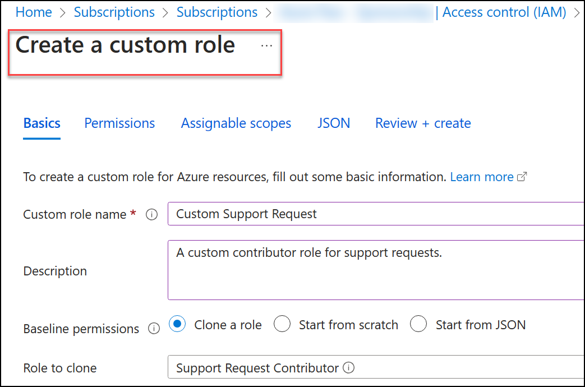
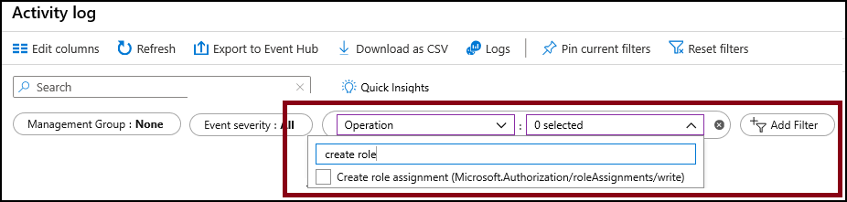

Lab - Manage Subscriptions and RBAC
Lab Introduction
In this lab, you learn about role-based access control. You learn how to use permissions and scopes to control what actions identities can and cannot perform. You also learn how to make subscription management easier using management groups.
This lab requires an Azure subscription. Your subscription type may affect the availability of features in this lab. You may change the region, but the steps are written using East US.
Estimated Timing: 30 Minutes
Lab Scenario
To simplify management of Azure resources in your organization, you have been tasked with implementing the following functionality:
-
Creating a management group that includes all your Azure subscriptions.
-
Granting permissions to submit support requests for all subscriptions in the management group. The permissions should be limited only to:
- Create and manage virtual machines
- Create support request tickets (do not include adding Azure providers)
Interactive Lab Simulations
There are some interactive lab simulations that you might find useful for this topic. The simulation lets you click through a similar scenario at your own pace. There are differences between the interactive simulation and this lab, but many of the core concepts are the same. An Azure subscription is not required.
-
Manage access with RBAC. Assign built-in role to a user and monitor the activity logs.
-
Manage subscriptions and RBAC. Implement a management group and create and assign a custom RBAC role.
-
Open a support request. Review support plan options, then create and monitor a support request, technical or billing.
Architecture Diagram

Job Skills
- Task 1: Implement management groups.
- Task 2: Review and assign a built-in Azure role.
- Task 3: Create a custom RBAC role.
- Task 4: Monitor role assignments with the Activity Log.
Task 1: Implement Management Groups
In this task, you will create and configure management groups. Management groups are used to logically organize and segment subscriptions. They allow for RBAC and Azure Policy to be assigned and inherited to other management groups and subscriptions. For example, if your organization has a dedicated support team for Europe, you can organize European subscriptions into a management group to provide the support staff access to those subscriptions (without providing individual access to all subscriptions). In our scenario everyone at the Help Desk will need to create a support request across all subscriptions.
-
Sign in to the Azure portal -
https://portal.azure.com. -
Search for and select
Microsoft Entra ID. -
In the Manage blade, select Properties.
-
Review the Access management for Azure resources area. Ensure you can manage access to all Azure subscriptions and management groups in the tenant.
-
Search for and select
Management groups. -
On the Management groups blade, click + Create.
-
Create a management group with the following settings. Select Submit when you are done.
Setting Value Management group ID az104-mg1(must be unique in the directory)Management group display name az104-mg1 -
Refresh the management group page to ensure your new management group displays. This may take a minute.
Note: Did you notice the root management group? The root management group is built into the hierarchy to have all management groups and subscriptions fold up to it. This root management group allows for global policies and Azure role assignments to be applied at the directory level. After creating a management group, you would add any subscriptions that should be included in the group.
Task 2: Review and Assign a Built-in Azure Role
In this task, you will review the built-in roles and assign the VM Contributor role to a member of the Help Desk. Azure provides a large number of built-in roles.
-
Select the az104-mg1 management group.
-
Select the Access control (IAM) blade, and then the Roles tab.
-
Scroll through the built-in role definitions that are available. View a role to get detailed information about the Permissions, JSON, and Assignments. You will often use owner, contributor, and reader.
-
Select + Add, from the drop-down menu, select Add role assignment.
-
On the Add role assignment blade, search for and select the Virtual Machine Contributor. The Virtual machine contributor role lets you manage virtual machines, but not access their operating system or manage the virtual network and storage account they are connected to. This is a good role for the Help Desk. Select Next.
Did you know? Azure originally provided only the Classic deployment model. This has been replaced by the Azure Resource Manager deployment model. As a best practice, do not use classic resources.
-
On the Members tab, Select Members.
Note: The next step assigns the role to the helpdesk group. If you do not have a Help Desk group, take a minute to create it.
-
Search for and select the
helpdeskgroup. Click Select. -
Click Review + assign twice to create the role assignment.
-
Continue on the Access control (IAM) blade. On the Role assignments tab, confirm the helpdesk group has the Virtual Machine Contributor role.
Note: As a best practice always assign roles to groups not individuals.
Did you know? This assignment might not actually grant you any additional privileges. If you already have the Owner role, that role includes all permissions associated with the VM Contributor role.
Task 3: Create a Custom RBAC Role
In this task, you will create a custom RBAC role. Custom roles are a core part of implementing the principle of least privilege for an environment. Built-in roles might have too many permissions for your scenario. We will also create a new role and remove permissions that are not necessary. Do you have a plan for managing overlapping permissions?
-
Continue working on your management group. Navigate to the Access control (IAM) blade.
-
Select + Add, from the drop-down menu, select Add custom role.
-
On the Basics tab complete the configuration.
Setting Value Custom role name Custom Support RequestDescription A custom contributor role for support requests. -
For Baseline permissions, select Clone a role. In the Role to clone drop-down menu, select Support Request Contributor.

-
Select Next to move to the Permissions tab, and then select + Exclude permissions.
-
In the resource provider search field, enter
.Supportand select Microsoft.Support. -
In the list of permissions, place a checkbox next to Other: Registers Support Resource Provider and then select Add. The role should be updated to include this permission as a NotAction.
Note: An Azure resource provider is a set of REST operations that enable functionality for a specific Azure service. We do not want the Help Desk to be able to have this capability, so it is being removed from the cloned role.
-
On the Assignable scopes tab, ensure your management group is listed, then click Next.
-
Review the JSON for the Actions, NotActions, and AssignableScopes that are customized in the role.
-
Select Review + Create, and then select Create.
Note: At this point, you have created a custom role and assigned it to the management group.
Task 4: Monitor Role Assignments with the Activity Log
In this task, you view the activity log to determine if anyone has created a new role.
-
In the portal locate the az104-mg1 resource and select Activity log. The activity log provides insight into subscription-level events.
-
Review the activites for role assignments. The activity log can be filtered for specific operations.

Cleanup your Resources
If you are working with your own subscription take a minute to delete the lab resources. This will ensure resources are freed up and cost is minimized. The easiest way to delete the lab resources is to delete the lab resource group.
- In the Azure portal, select the resource group, select Delete the resource group, Enter resource group name, and then click Delete.
- Using Azure PowerShell,
Remove-AzResourceGroup -Name resourceGroupName. - Using the CLI,
az group delete --name resourceGroupName.
Key Takeaways
Congratulations on completing the lab. Here are the main takeaways for this lab.
- Management groups are used to logically organize subscriptions.
- The built-in root management group includes all the management groups and subscriptions.
- Azure has many built-in roles. You can assign these roles to control access to resources.
- You can create new roles or customize existing roles.
- Roles are defined in a JSON formatted file and include Actions, NotActions, and AssignableScopes.
- You can use the Activity Log to monitor role assignments.
Address: H-34, Ground Floor, Sector 63, Noida, Uttar Pradesh
Email: info@ceekh.com